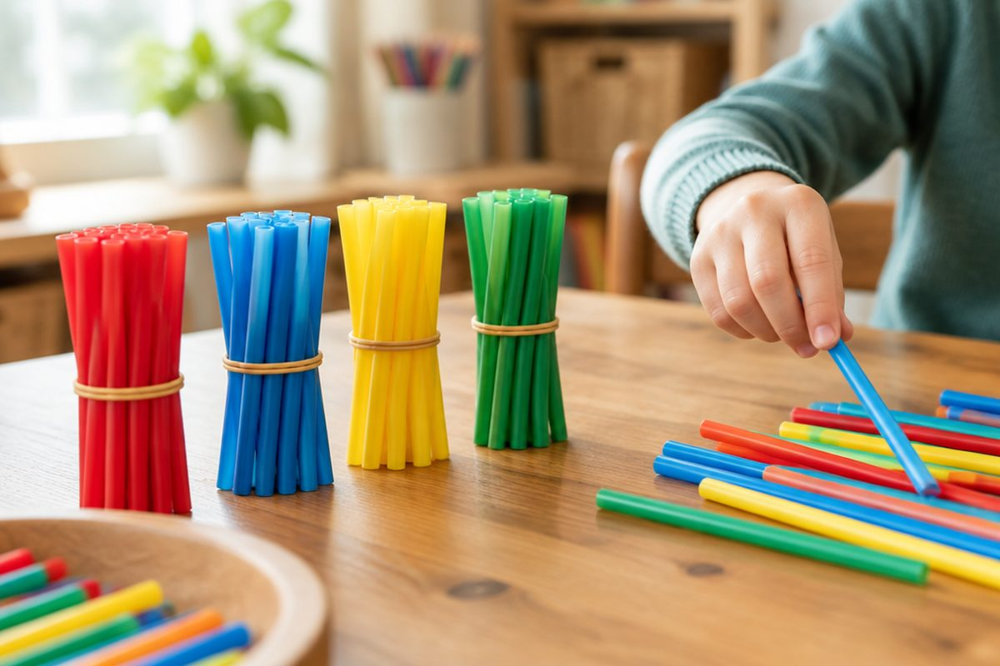

전체 단원 › 1학년 2학기 › 수학 › 100까지의 수
10개씩 묶어 세면 100까지 셀 수 있어요!

사탕이 아주 많아요. 하나씩 세면 헷갈리죠? 10개씩 묶어 세면 100까지도 쉽게 셀 수 있어요.
10개씩 묶어요
10개를 한 묶음으로 묶어요.
10개씩 묶음이 몇 개인지 세면 빨라요.
10개씩 묶음 2개 → 20 / 10개씩 묶음 5개 → 50
몇십은 두 가지로 읽어요
20은 '이십' 또는 '스물'이라고 읽어요.
개수를 셀 때는 스물, 서른처럼 읽어요.
10 십·열, 20 이십·스물, 30 삼십·서른, 40 사십·마흔, 50 오십·쉰, 60 육십·예순, 70 칠십·일흔, 80 팔십·여든, 90 구십·아흔, 100 백
이렇게 풀어요: 묶음과 낱개로 쓰기
먼저 10개씩 묶음을 세요.
남은 낱개를 세요.
묶음 수를 앞에, 낱개 수를 뒤에 써요.
① 10개씩 묶음 3개 ② 낱개 6개 ③ 36 (삼십육, 서른여섯)
크기 비교와 짝수·홀수
10개씩 묶음 수가 큰 쪽이 더 커요.
묶음 수가 같으면 낱개 수를 비교해요.
둘씩 짝을 지어 남는 것이 없으면 짝수, 하나 남으면 홀수예요.
42 < 51 (묶음 4 < 5) / 38 > 35 (낱개 8 > 5) / 짝수: 2, 4, 6, 8, 10 / 홀수: 1, 3, 5, 7, 9
핵심 낱말
- 10개씩 묶음
- 10개를 한 덩어리로 묶은 것
- 낱개
- 묶음에 들어가지 않고 하나씩 남은 것
- 100(백)
- 99보다 1 큰 수, 10개씩 묶음 10개
- 짝수
- 둘씩 짝을 지을 때 남는 것이 없는 수
- 홀수
- 둘씩 짝을 지을 때 하나가 남는 수
한 줄 정리
- 10개씩 묶음과 낱개로 두 자리 수를 나타내요.
- 몇십은 '이십·스물'처럼 두 가지로 읽고, 99 다음은 100이에요.
- 묶음 수부터 비교하고, 같으면 낱개를 비교해요.
학교 교육과정 연결
- [2수01-01] 수의 필요성을 인식하면서 0과 100까지의 수 개념을 이해하고, 수를 세고 읽고 쓸 수 있다.
- [2수01-03] 네 자리 이하의 수의 범위에서 수의 계열을 이해하고, 수의 크기를 비교할 수 있다.